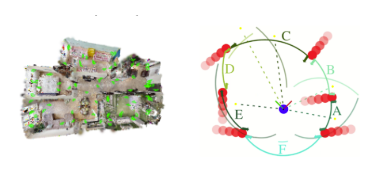

Active Mapping with 3D Gaussian Splatting
In this project I built an active mapping pipeline that allows a robot to choose where to explore next instead of passively recording its surroundings. By representing the environment as a collection of 3D Gaussians, the system estimates which regions are most uncertain and selects a Next Best View (NBV) and Next Best Trajectory (NBT) to reduce that uncertainty. This approach enables autonomous agents to reconstruct unknown environments more efficiently than traditional SLAM techniques.
Developing this pipeline involved designing an entropy‑based scoring function to rank potential viewpoints and implementing an optimization framework to generate smooth trajectories through informative areas. I wrote software to integrate sensors, process large datasets, and visualize results. The outcome is a flexible mapping system that can be extended to multi‑robot exploration and search‑and‑rescue scenarios.
Dynamic Gap Planning for Autonomous Driving
I also helped develop a dynamic gap planner for autonomous vehicles. When a car shares the road with other traffic it must identify safe openings and adjust its trajectory accordingly. Our planner analyzes perception data from cameras and LiDAR to detect gaps in traffic and generates smooth paths through those gaps using differential flatness and feedback control.
This work required building a perception‑to‑planning pipeline that segments obstacles and free space and continuously updates the vehicle’s route as the environment changes. The resulting system combines data‑driven perception with optimization‑based planning and has given me valuable experience at the intersection of machine learning and control systems.
Future Work and Discovery Project
The projects above represent my current research focus, but they are only the beginning. As part of ECE 1100 I will soon embark on a discovery project of my choosing. This section of the portfolio is designed to be scalable: when my discovery project is ready, I will add a detailed overview, results, and any presentations or videos that showcase the work. Stay tuned for updates!